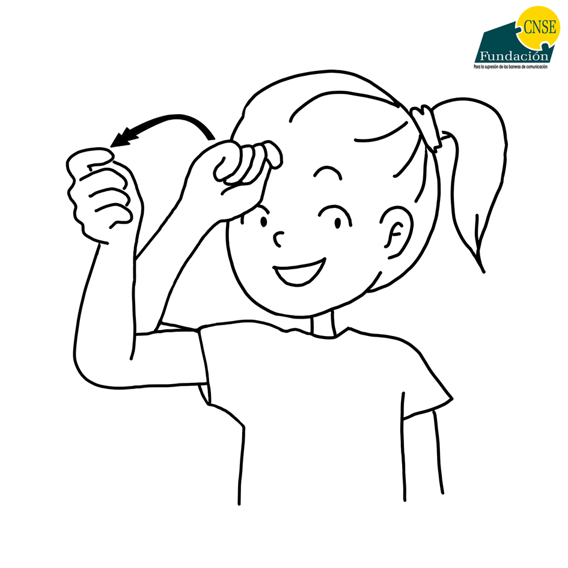
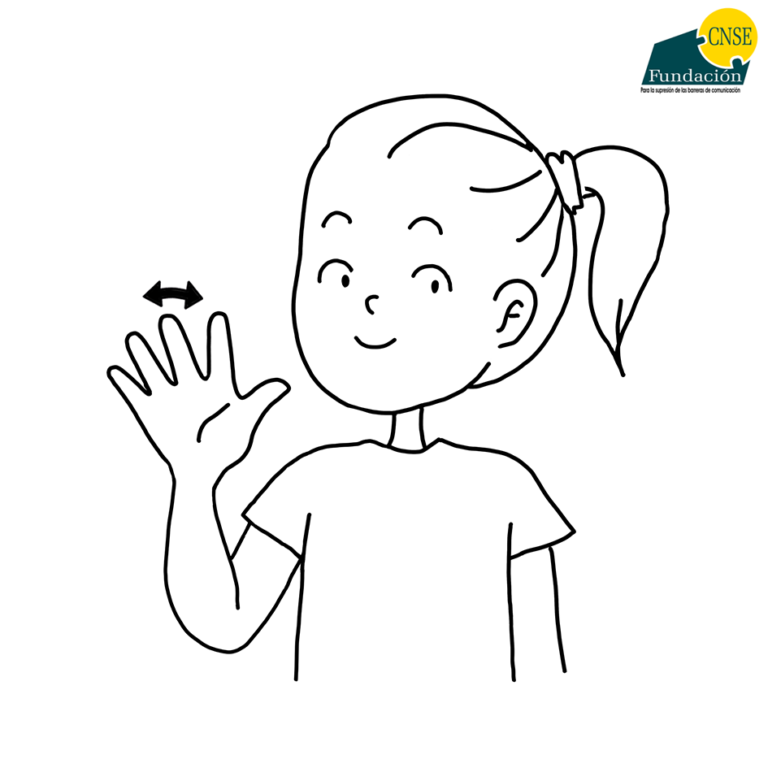
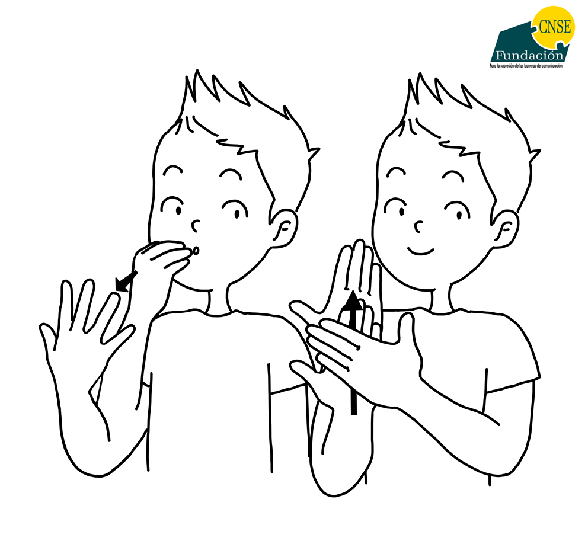
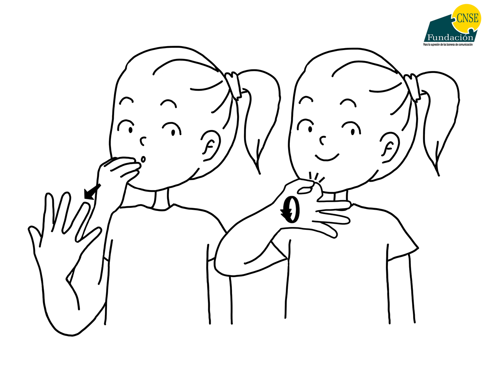
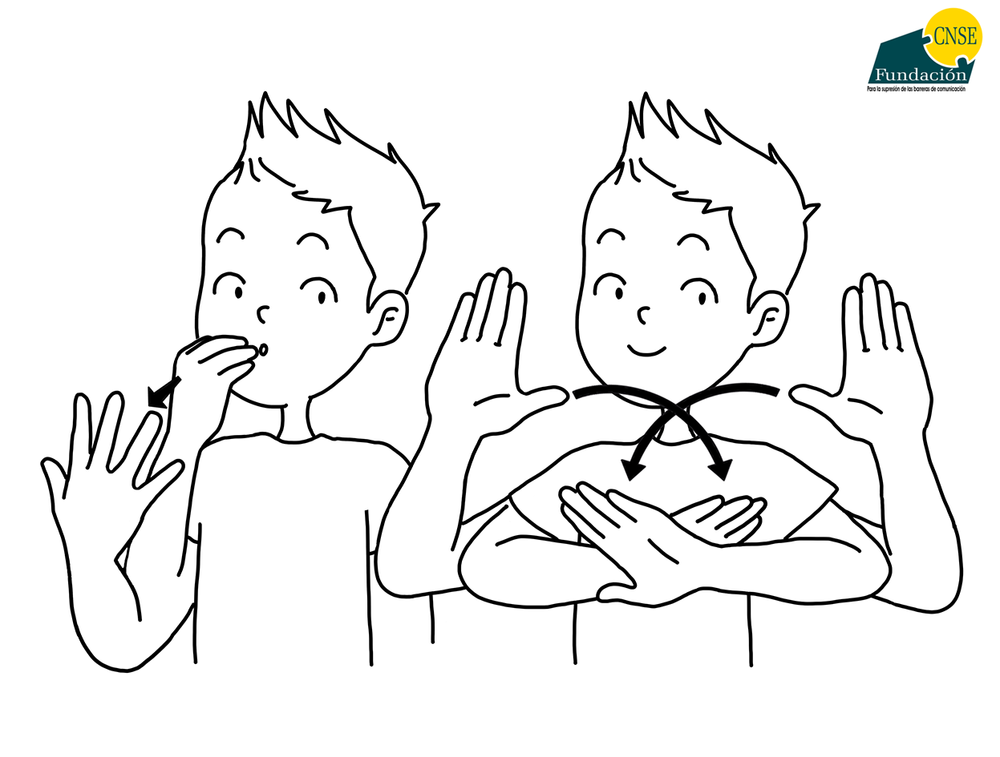
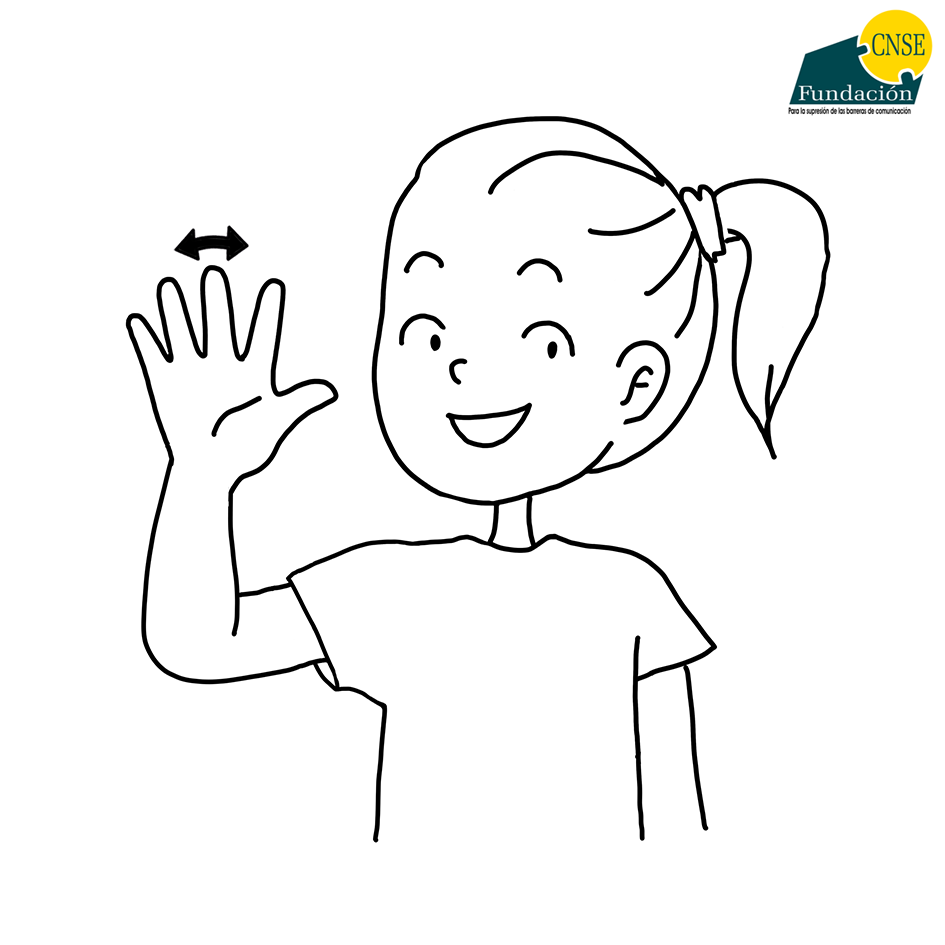
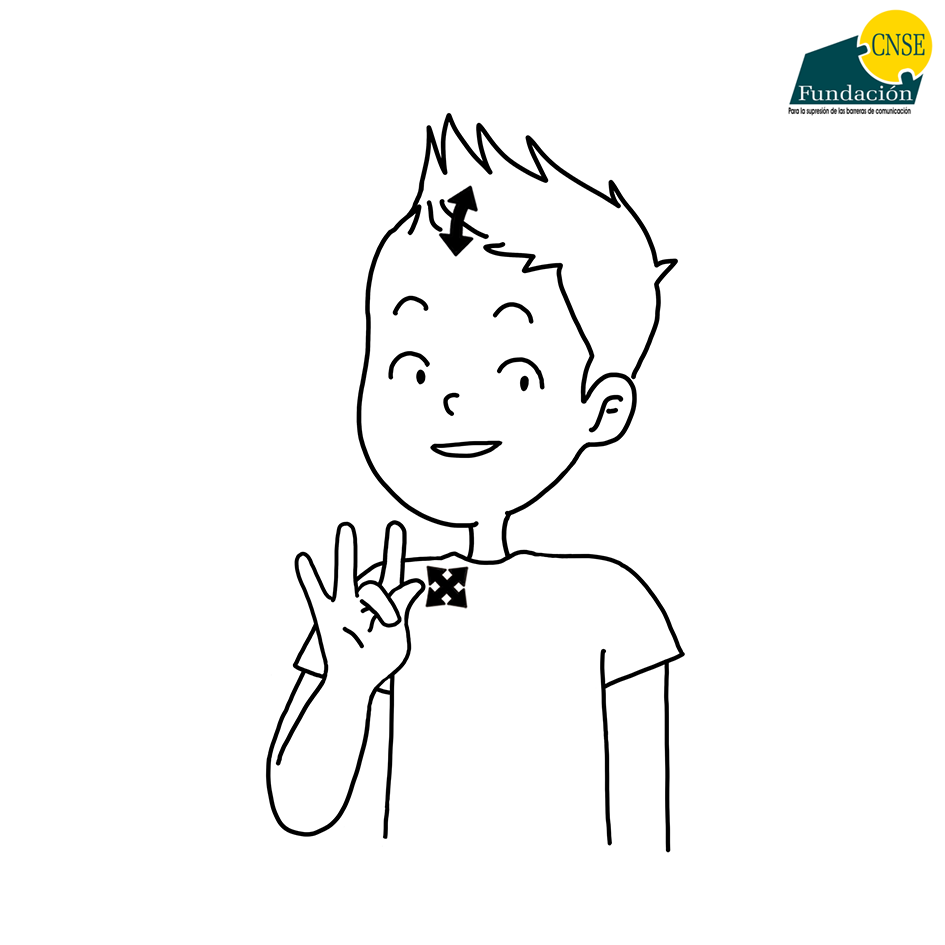
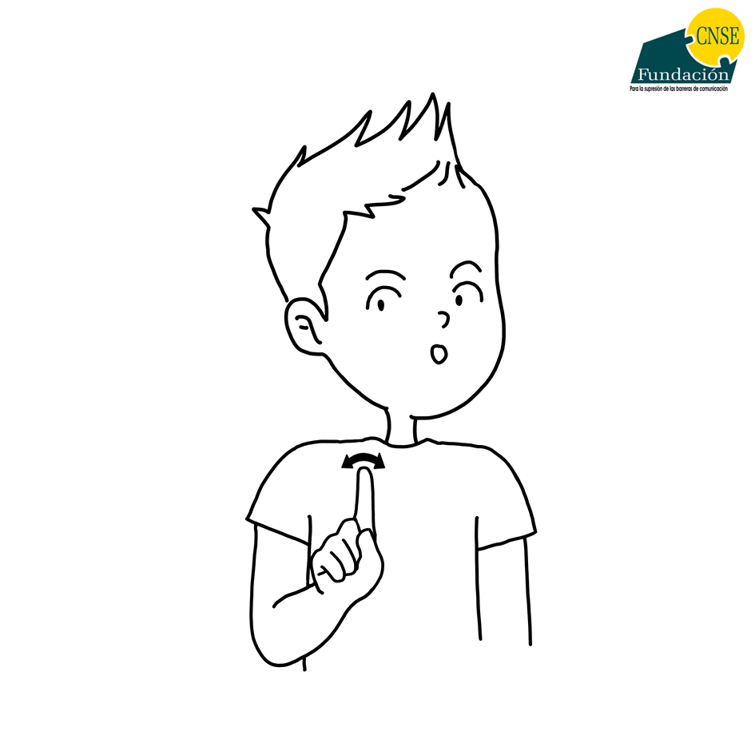
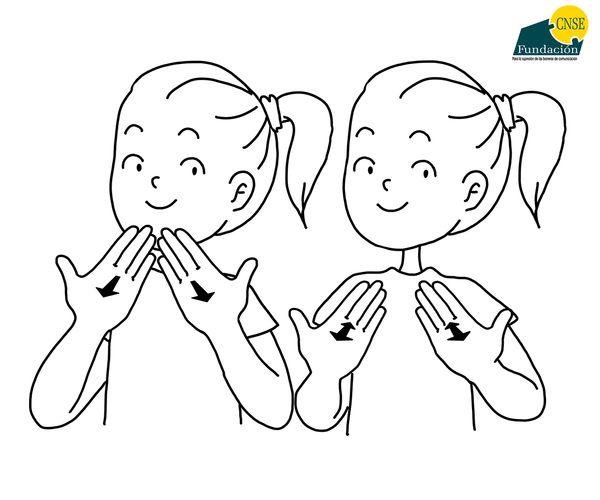

Bienvenido al nivel 1 aqui veremos algunas señas recuerdalas y memorisalas ya que despues de esta habran preguntas relacionadas estas estaciones se repitran cada sierto tiempo suerte

SALUDO. la forma en que nosotros indicamos un saludo es como si estuvieramos sacandonos nuestro sombrero agitando suavemente la mano

ADIOS. la forma de decir adios es como si estuvieramos saludando abriendo bien los dedos y agitando las manos

BUENOS DIAS. esto es confuso hasta para mi pero bueno primero con la mano en posision de agarrar algo al lado de los labios y como si estuvieramos dando un beso grr alejamos nuestra mano y lo extendemos luego con la otra mano hacemos un gesto encima de la mano del beso

BUENAS TARDES. este al principio igual al anteripr solo que despues de dar el beso como si estuvieramos apunto de chiflar nos agarramos el menton

BUENAS NOCHES igual con el beso ahora despues de este lo que tenemos que hacer es alejar nuestras manos un poco y hacer como una casita con nuestros dedos gordos

HOLA. la forma en que nosotros hacemos este gesto es levantando levantando el brazo a la altura del hombro y sacudiendo la mano

SI. como nosotros hacemos este gesto es posisionar nuestra mano a la altura del hombro y con los dedos hacer una forma de cruz y posteriormente agitar la cabeza de arriba hacia abajo

NO. para hacer el gesto de no simplemente devemos posisionar nuestra mano a la altura del hombro y con el dedo indice hacer el movimiento de izquierda a derecha
CUIDADO. para hacer el gesto de cuidado tendremos dos steps es decir dos pasos primero con el dedo indice señalamos cerca del ojo el segundo paso seria con la misma mano con la que señalamos nuestro hojo hacer como si estuvieramos recogiendo un puñito de sal y con la otra mano hacer forma de una casa

GRACIAS. para poder hacer el gesto de gracias devemos de extender nuestras manos sin despegar los dedo colocamos nuestras manos cerca de nuestra boca y movemos de arriba asia abajo
fin de la primera estasion
esto son estaciones de recuerdo aqui podras volver cuando quieras aqui podras repasar algunoos gestos con la practica presiona siguiente para seguir con el siguiente